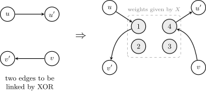
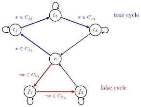

35 The permanent and the reduction from \SAT
% noend hides “end for”; drop it to keep them
The permanent of an n \times n matrix A = (a_{ij}) is \mathrm{perm}(A) = \sum_{\sigma \in S_n} \prod_{i=1}^{n} a_{i,\sigma(i)}, where S_n is the set of permutations of \{1, \dots, n\}. The formula is the same as for the determinant, except that every term has a plus sign. This small change makes a huge difference. The determinant can be computed in polynomial time by Gaussian elimination, but no polynomial-time algorithm for the permanent is known. In this section we show why: computing the permanent is at least as hard as counting the satisfying assignments of a formula.
35.0.1 Cycle covers
We read an n \times n matrix A as a weighted directed graph G_A on the vertices \{1, \dots, n\}, with an edge i \to j of weight a_{ij} whenever a_{ij} \neq 0. Self-loops i \to i are allowed. A permutation \sigma gives a nonzero term of \mathrm{perm}(A) if and only if all the edges i \to \sigma(i) exist. These edges split into disjoint cycles that together visit every vertex exactly once. Such a set of cycles is a cycle cover of G_A, and its weight is the product of the weights of its edges. So \mathrm{perm}(A) = \sum_{C \text{ cycle cover of } G_A} w(C). In particular, if all weights are 1, then \mathrm{perm}(A) is the number of cycle covers of G_A.
For a 3-CNF formula F, let \#F be the number of satisfying assignments of F.
Theorem 35.1 (Valiant, 1979) There is a polynomial-time algorithm that, given a 3-CNF formula F with m clauses, each with exactly 3 literals, computes an integer matrix A_F with entries in \{-1, 0, 1, 2, 3\} such that \mathrm{perm}(A_F) = 4^{3m} \cdot \#F. In particular, F \in 3\mathtt{SAT} if and only if \mathrm{perm}(A_F) \neq 0.
So a polynomial-time algorithm for the permanent would let us count satisfying assignments, and in particular decide 3\mathtt{SAT}, in polynomial time. In the language of counting complexity, the permanent is \#\mathbf{P}-hard, and it is in fact \#\mathbf{P}-complete.
The proof builds a weighted graph G_F from three kinds of gadgets: one for each variable, one for each clause, and an XOR gadget that links them.
35.0.2 The XOR gadget
The XOR gadget is the weighted graph on four vertices 1, 2, 3, 4 whose matrix is X = \begin{pmatrix} 0 & 1 & -1 & -1 \\ 1 & -1 & 1 & 1 \\ 0 & 1 & 1 & 2 \\ 0 & 1 & 3 & 0 \end{pmatrix}. We write X_{R,C} for the matrix obtained from X by deleting the rows in R and the columns in C. A direct computation gives \mathrm{perm}(X) = \mathrm{perm}(X_{1,1}) = \mathrm{perm}(X_{4,4}) = \mathrm{perm}(X_{14,14}) = 0, \qquad \mathrm{perm}(X_{4,1}) = \mathrm{perm}(X_{1,4}) = 4.
We use it to link two edges u \to u' and v \to v' of a graph, so that in every cycle cover with nonzero weight exactly one of them is used. We delete both edges, add a copy of the gadget, and add the edges u \to 1, \quad 4 \to u', \qquad v \to 4, \quad 1 \to v', all of weight 1 (Figure 35.1). A cycle cover can now go through the gadget in two ways: entering at 1 from u and leaving at 4 towards u', which plays the role of the edge u \to u', or entering at 4 from v and leaving at 1 towards v', which plays the role of v \to v'.

Lemma 35.1 Fix how a cycle cover behaves outside an XOR gadget. Then the total weight of the ways to complete it inside the gadget is
- 4, if exactly one of the two paths “u \to 1 \cdots 4 \to u'” and “v \to 4 \cdots 1 \to v'” is used;
- 0, in every other case: neither path is used, both are, or the cover enters the gadget at one vertex and leaves it at the same vertex.
35.0.3 The variable and clause gadgets
Variable gadget. Let x be a variable that occurs positively in p clauses and negatively in q clauses. Its gadget has a vertex s and two cycles through s (Figure 35.2):
- a true cycle s \to t_1 \to \cdots \to t_p \to s, with one edge for each positive occurrence of x, namely the edge entering t_i;
- a false cycle s \to f_1 \to \cdots \to f_q \to s, with one edge for each negative occurrence.
If p = 0 or q = 0, the corresponding cycle is a self-loop on s. Every vertex other than s has a self-loop. In every cycle cover of the gadget, s lies on exactly one of the two cycles, and all the other vertices are covered by their self-loops. So the gadget has exactly two cycle covers: one uses the true cycle, which corresponds to x = 1, and the other uses the false cycle, which corresponds to x = 0.

Clause gadget. The clause gadget is a graph on four vertices 1, 2, 3, 4 with three distinguished external edges e_1 = 1 \to 2, e_2 = 2 \to 1 and e_3 = 3 \to 4, one for each literal of the clause. Its matrix, with all weights equal to 1, is Q = \begin{pmatrix} 1 & \mathbf{1} & 1 & 1 \\ \mathbf{1} & 0 & 1 & 1 \\ 0 & 0 & 1 & \mathbf{1} \\ 1 & 1 & 0 & 1 \end{pmatrix}, where the entries in bold are the external edges. Listing its 7 cycle covers shows:
| External edges used | Cycle cover |
|---|---|
| none | (1)\,(2\ 4)\,(3) |
| e_1 | (1\ 2\ 4)\,(3) |
| e_2 | (1\ 4\ 2)\,(3) |
| e_3 | (1)\,(2\ 3\ 4) |
| e_1, e_2 | (1\ 2)\,(3)\,(4) |
| e_1, e_3 | (1\ 2\ 3\ 4) |
| e_2, e_3 | (1\ 3\ 4\ 2) |
| e_1, e_2, e_3 | none |
So the clause gadget has the following key property: for every proper subset S of the external edges, there is exactly one cycle cover that uses exactly the external edges in S, and there is no cycle cover that uses all three.
The idea is that an external edge is used exactly when its literal is false. So the clause gadget can be covered if and only if at least one of its literals is true.
35.0.4 The construction
Given F = C_1 \wedge \cdots \wedge C_m with variables x_1, \dots, x_n, the graph G_F consists of:
- one variable gadget for each x_i;
- one clause gadget for each C_j;
- for each occurrence of a literal in a clause, an XOR gadget linking the edge for that occurrence in the variable gadget with the external edge for that literal in the clause gadget. This uses 3m XOR gadgets.
The matrix A_F is the weighted adjacency matrix of G_F. It has O(n + m) vertices and can be computed in polynomial time. Its entries are 0, 1, or entries of X.
- Negative entries matter. For a 0/1 matrix, \mathrm{perm}(A) \neq 0 if and only if the bipartite graph with biadjacency matrix A has a perfect matching, which can be decided in polynomial time. The reduction from 3\mathtt{SAT} needs cancellations, which are provided by the negative entries of X. Even so, computing the permanent of a 0/1 matrix is still \#\mathbf{P}-complete. Valiant removed the negative entries by working modulo a large number and replacing each edge of weight w by a small gadget of edges of weight 1.
- Permanent versus determinant. In the determinant, each cycle cover is counted with the sign of its permutation. These signs make Gaussian elimination possible, and the gadgets above do not work for the determinant. Valiant’s algebraic version of \mathbf{P}\stackrel{?}{=} \mathbf{NP} (the classes \mathbf{VP} and \mathbf{VNP}) asks, essentially, whether the permanent can be written as a determinant of a not much larger matrix.